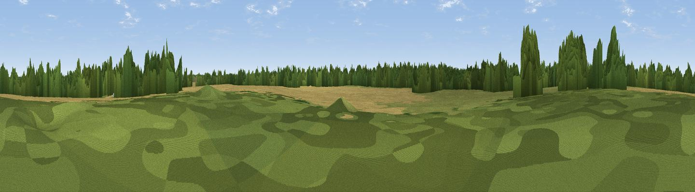

Ince Blundell Hill
#40495 in England · top 83% of its area beats it · near Ince BlundellWhere it is
The exact computed spot (SD 33102 02751). Click the marker for map links.
The view, rendered

A 360° render of this exact spot computed from the terrain model, tree cover and land cover — summer colours, afternoon light, calibrated against photographs of famous viewpoints. Real trees, hedges and buildings will differ in detail.
The panorama
Grey silhouette: terrain skyline in each direction (720 bearings, Earth curvature and refraction included). Dashed green: skyline with trees (+15 m) and buildings (+8 m) as obstacles. Blue strip: how far the ground is visible on each bearing.
Where the view opens
Wedge length = distance to the farthest visible ground on that bearing (vegetation-aware). Rings at 10, 25 and 50 km.
What fills the view
51% cropland · 23% grassland · 21% woodland · 4% built-up ·
Angular shares of the visible panorama (visual magnitude), not map area. Landscape diversity 0.52 (0–1 Shannon).
Key numbers
More beautiful places nearby
The staircase of upgrades: each row has a higher view potential than everything closer. Driving times are estimates from straight-line distance, calibrated against real road routing — check an actual route before setting out.
| Place | Direction | Drive | Score |
|---|---|---|---|
| Viewpoint near Formby | WNW · 7 km | ~14 min | 53.3 |
| Viewpoint near Wallasey | SSW · 9 km | ~19 min | 59.9 |
| Viewpoint near Bidston | SSW · 14 km | ~25 min | 61.6 |
| Viewpoint near Dalton | ENE · 18 km | ~31 min | 74.2 |
| Helsby Hill | SSE · 32 km | ~49 min | 74.6 |
| Beacon Hill | SE · 32 km | ~50 min | 77.3 |
| Rivington Pike | ENE · 33 km | ~51 min | 81.9 |
| White Brow | ENE · 34 km | ~52 min | 82.9 |
53.51716, -3.01039 · source: osm peak · position refined by local search. Computed location — check access rights before visiting.